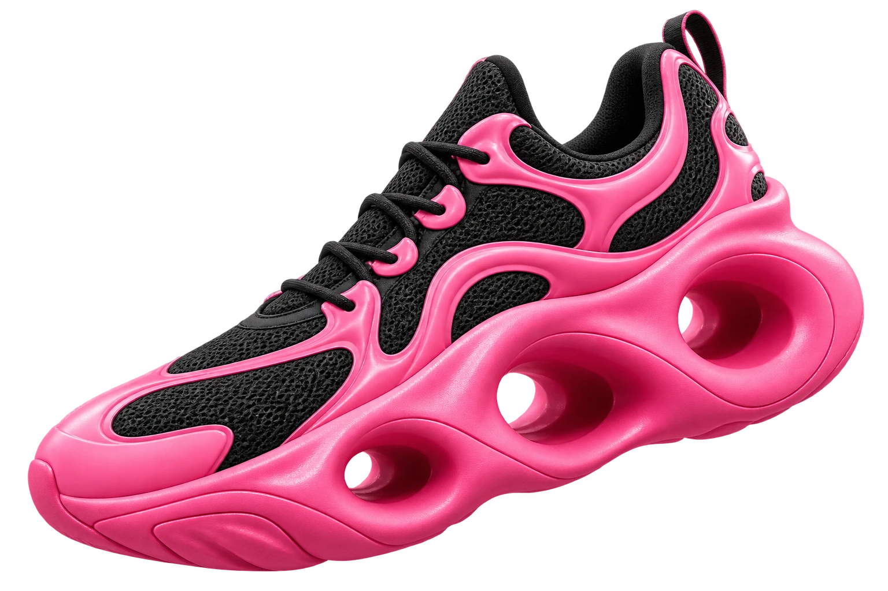

CALZADO EXPERIMENTAL / VOL. 01NO RULES. JUST SHUS.
Para quienes pisan distinto.
FUERA
DE LO
COMÚN.
El siguiente paso no tiene
por qué parecerse al anterior.
SWELL / PINK

Una nueva forma de dejar huella.DISEÑO SIN LÍMITES.
EL FONDO, A TU MANERA
Mueve el cursor y mira cómo responde.
EL PRIMER CAPÍTULO
NO ENCAJAN.
TE ENCUENTRAN.
Tres versiones de una misma idea.
Un paso fuera de lo esperado.
COLECCIÓN CONCEPTUAL
Diseños e imágenes conceptuales. Esta experiencia no procesa compras.
UN POCO
RAROS.
MUY TÚ.
No nacimos para combinar con todo. Nacimos para darle forma a lo que todavía no tiene forma.
Volumen, contraste y siluetas inesperadas. El negro pone la base. El rosa rompe el silencio. Tú decides el camino.
Encuentra tu silueta ↗EXPERIMENTAL FOOTWEARYOUR WAY. ALWAYS.